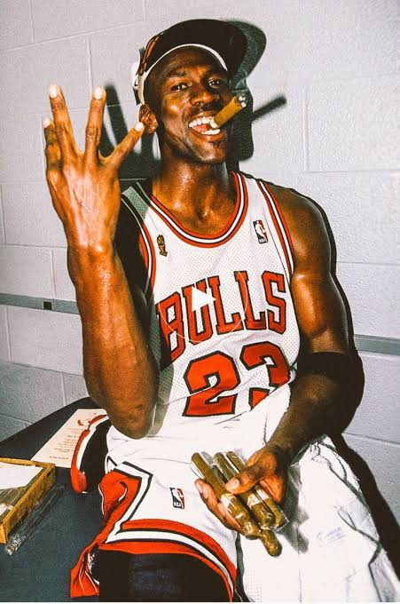

Michael Jeffrey Jordan nació el 17 de febrero de 1963 en Brooklyn, Nueva York. Estudió en la Universidad de Carolina del Norte y comenzó su carrera en la NBA en 1984 con los Chicago Bulls.
Durante su carrera destacó por su talento, liderazgo y capacidad para anotar puntos. Ganó seis campeonatos con los Bulls y también jugó para los Washington Wizards.
Haz clic en la imagen para ver algunos de los mejores momentos de Michael Jordan en la NBA.
